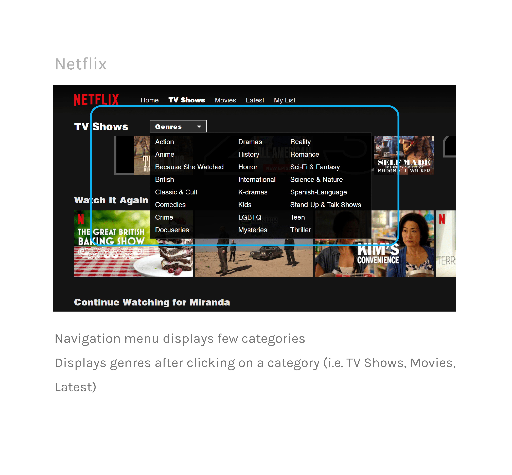
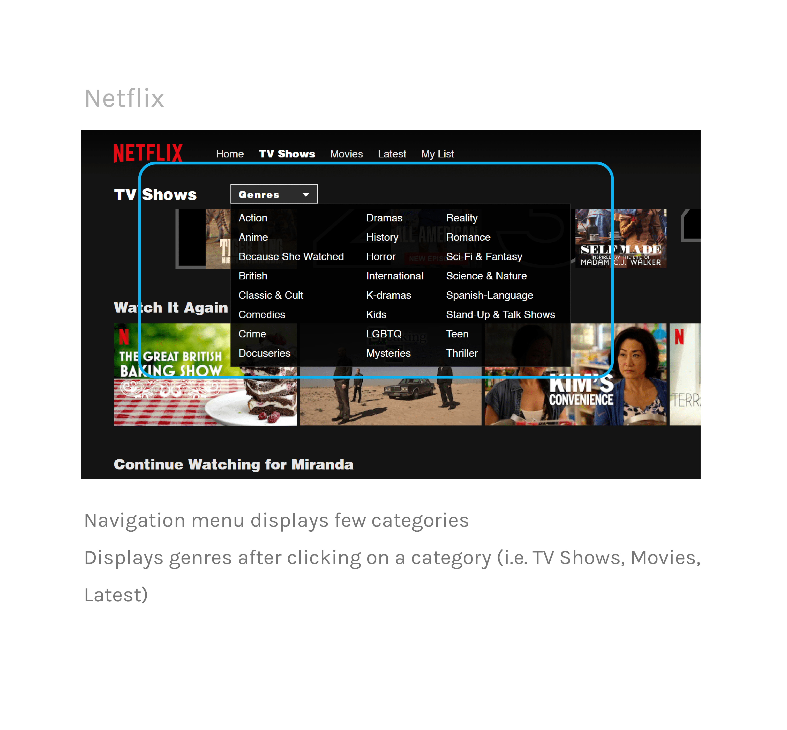

Project Elements
Duration üïê
February – March 2020 (2 weeks)
Tools ✒️
Figma, Adobe Illustrator
Team üôã‚Äç
Individual (Personal case study)
01. Project Overview
Background
The American premium television network, HBO offers a variety
of television series, documentaries, sports, movies, and more. HBO Go is an extension of their network,
allowing customers with a paid subscription to stream HBO content on demand from anywhere.
Objective
The current web and mobile designs feel impersonal and are overly simple, creating a
mediocre and uninspiring experience for customers. It is also lacking in essential features,
such as a resume series playback or watch next button, thus making it frustrating for customers
to indulge in any content on the platform. The purpose of this project
is to redesign the web interface to make it easier and more engaging to watch content on HBO Go.
02. User Research
User Interviews
Because HBO has a diverse audience, I decided to conduct interviews with people in my immediate network,
but also use the HBO Go reviews customers have left to guide my redesign.
To gain meaningful insight on the needs and priorities of my audience, I asked a series of questions while users interacted with the current website.
 After collecting these interview responses, I was able to reduce these insights down into three primary concerns.
After collecting these interview responses, I was able to reduce these insights down into three primary concerns.
To gain meaningful insight on the needs and priorities of my audience, I asked a series of questions while users interacted with the current website.
How do you decide what to watch when you’re browsing?
What, if anything, caused you frustration using this platform?
Is HBO your first choice to consume media content? If not, what makes you gravitate
toward your preferred platform?
How might you improve its design and usability?
Primary Concerns
○  Lack of individualized content
There is an absence of personalized content curation (i.e. recommendations), thus creating a sense of distance
Feels like a one-time use platform
○  The interface is uninviting and unmemorable
The layout of content is exactly the same throughout the entire page, which feels unexciting
and causes viewers to quickly scroll through without wanting to explore
○ Little to no assistance in guiding and informing users
Users are forced to hunt for their desired content because of the lack of content descriptions,
play next buttons, and other essential features that make for an easy watching experience
There's a lack of previews/trailers that would interest the users
Competitive Analysis
Because all those I interviewed referenced HBO competitors, I decided to analyze what they were doing to engage users that HBO Go might lack.
I focused on two leading competitors, Hulu and Netflix. These series of comparisons will guide me in determining where HGO Go falls short, how they
can rise up to market standards, and what they can do to differentiate itself from its competitors.
Navigation
 


Previews & trailers


Content layout


Video Playback


Individual Preferences


03. Ideation
Sketches
04. Prototyping
Wireframes
I took the key features and translated them into simple wireframes. I was mainly focused on
exploring different layouts that centralized the most interaction-heavy items, best
displayed the information to the user, and unified nagivation elements.

Iterating & User Testing
In order to assess the new design’s friendliness and usability, I had 4 people from ages 20 to 55
test out these wireframes. I gave each individual the same set of tasks to accomplish and had each of
them walk through their user flow.
○  4 users
1 new user
2 frequent users
1 infrequent user
○  3 Tasks
1. Transfer money from your Savings to Checking account
2. Check to see if you have any notifications or messages
3. View your most recent credit card statement
User Testing Results
4/4 users were able to navigate to the Transfer & Pay screen and begin the transfer
4/4 users were able to check their notifications and noted that the yellow “alert” circle on the hamburger icon signaled how to get there
4/4 users were able to navigate to their credit card page and found the “View statements” button
After observing how each individual navigated through the design, I was able to note down minor, common areas of confusion and difficulty:
They also expressed that some subtext, for example, "Available Balance," was easily overlooked given its light font weight and size
4/4 users were able to check their notifications and noted that the yellow “alert” circle on the hamburger icon signaled how to get there
4/4 users were able to navigate to their credit card page and found the “View statements” button
After observing how each individual navigated through the design, I was able to note down minor, common areas of confusion and difficulty:
○  Small text size
When older users were examining the screen layouts, they noted that it was difficult to see the text clearly, especially
in areas with multiple lines of text
They also expressed that some subtext, for example, "Available Balance," was easily overlooked given its light font weight and size
○  Small icon size
Similar to the small text size, 3/4 users noted that the icon sizes might be too small and could be increased for better visibility
○  Need for a "help" button
2/4 users expressed that it might be helpful to have a "help" button somewhere convenient, especially for long-time users who
are used to the old design and are trying to get acclamated to the updated version
High-Fidelty Prototype
After discussing with the same people I interviewed and receiving feedback, I was able to create more structured and effective layouts of the simple wireframes.
I also concentrated on implementing the Wells Fargo color palette in a purposeful and consistent way that aligned with the new brand identity.

One of the most important features I wanted to include in this redesign was the static navigation bar at the bottom of the screen. It houses
all of the most interaction-heavy features so that it can be found quickly and conveniently. As for the left slide out menu, it combines the information found in
the original double slide out menus. I wanted to ensure that information is grouped effectively in this redesign so that like items can be found in a single place.
The redesign of the Checking and Credit Card accounts focus on displaying the most essential information to ease to the user into the page and avoid overwhelming them.
The redesign of the Checking and Credit Card accounts focus on displaying the most essential information to ease to the user into the page and avoid overwhelming them.


05. Reflection
Lessons & Takeaways
Throughout the course of this project, I most enjoyed user interviews and implementing better systems that addressed their concerns.
I learned that I actually like a bit of complexity as it allows me to search for connections and relationships within systems
and out in the real world. This helped develop my own understanding of people and how to meet their needs that they didn't even
know they had.
In the future, I would like to try to conduct user research that extends beyond my immediate network to gain more insight on users' concerns. I would also like to have iterated a bit more and done more user testing to validate this redesign. The next steps for this project would be to design further into the other navigation features like Deposit and Send to get a more holistic view of the functions of this app.
In the future, I would like to try to conduct user research that extends beyond my immediate network to gain more insight on users' concerns. I would also like to have iterated a bit more and done more user testing to validate this redesign. The next steps for this project would be to design further into the other navigation features like Deposit and Send to get a more holistic view of the functions of this app.